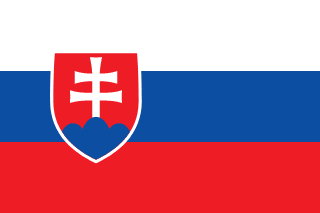
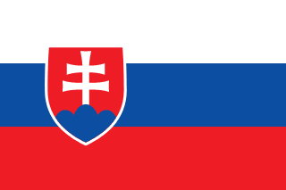

Technická Dokumentácia
Rozdelenie uloh
Damian Topoli
- Animacia
- Instalacia Octave
- Synchronizacia grafu s animaciou
Kende vykreslovanie grafu nieje idealne presnu synchronizaciu vydno len pri spomaleni
- Generovanie PDF
Peter Bartko
- API
- Logovanie do databazy
- Posialne CSV mailom
- Design
Martin Šefčík
- Graf
- Dvoj jazycnost
- Dokumentacia
V Zadani nie je vypracovane
- Docker
- synchrónne sledovanie experimentovania
 
